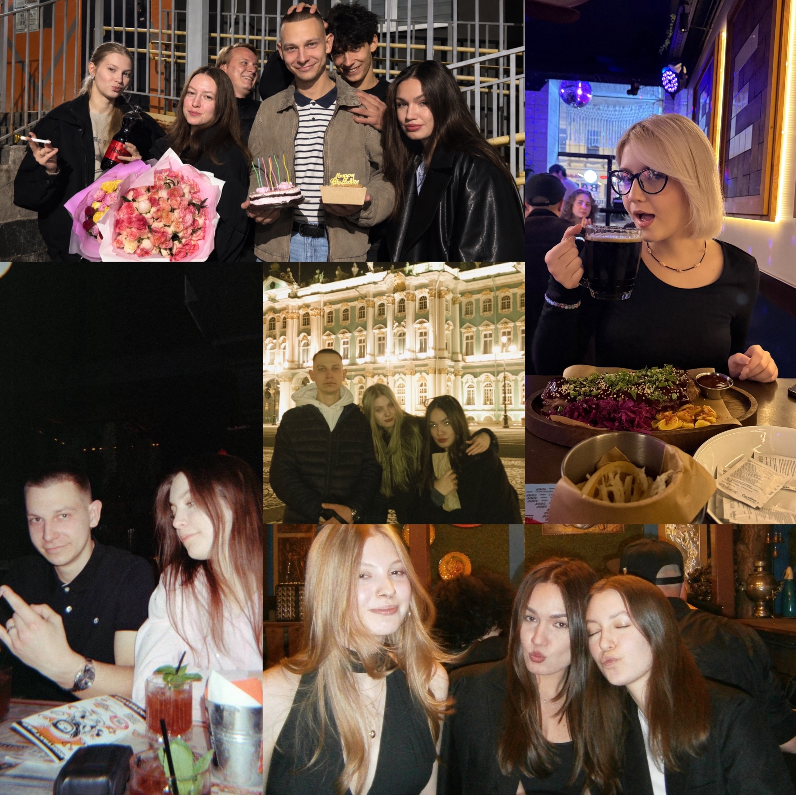

Мой фаворит

Мои друзья
У меня нет фаворитов в привычном понимании этого слова, но я очень сильно люблю своих друзей, которые остаются со мной рядом несмотря ни на что. Это самое ценное, что у меня есть.
Сыграем?
Камень, ножницы, бумага
Сделай свой выбор!
Счет: Вы 0 : 0 Компьютер